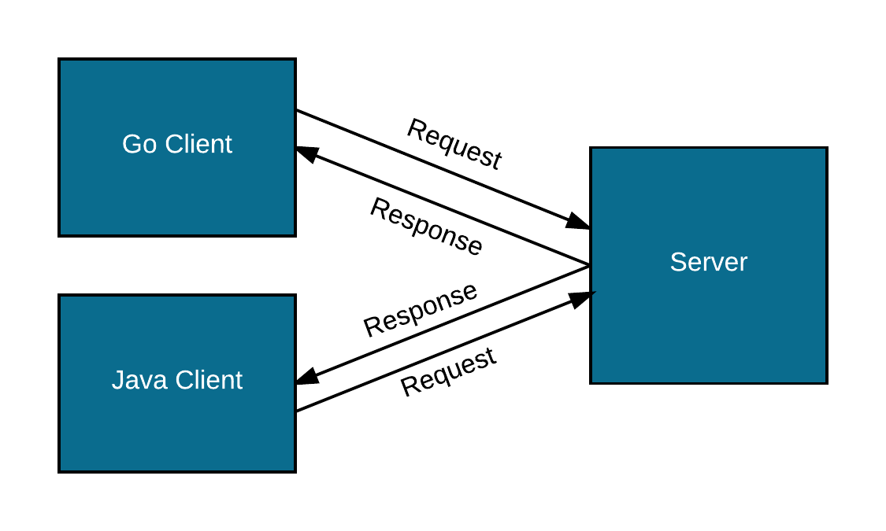
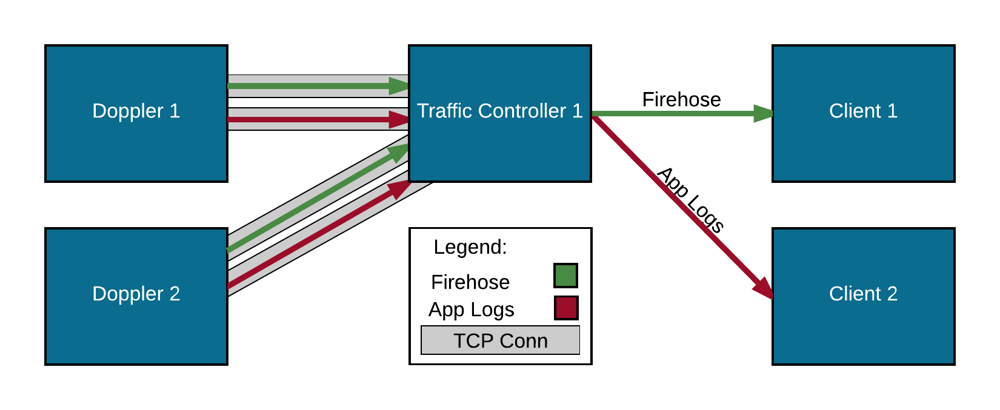
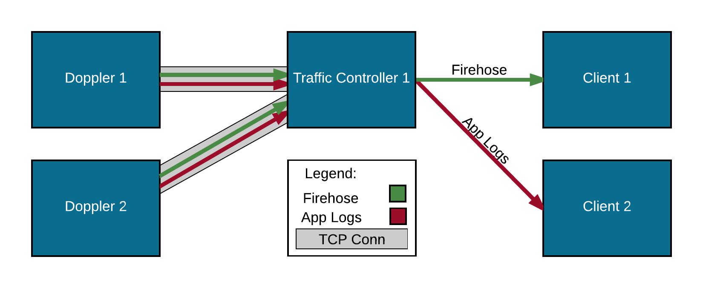

class: center, middle # gRPC Jeremy Alvis --- # What is gRPC? "In gRPC a client application can directly call methods on a server application on a different machine as if it was a local object, making it easier for you to create distributed applications and services." <img class="center white-background" src="http://www.grpc.io/grpc.github.io/img/landing-2.svg" style="width: 80%;" /> <div class="footer"><a href="http://www.grpc.io/grpc.github.io/img/landing-2.svg">Img source</a></div> --- # Principles of gRPC * Payload agnostic - protobuf, JSON, XML, etc. (Protobuf supported directly) * Performant - [gRPC benchmarks](http://www.grpc.io/docs/guides/benchmarking.html) * Streaming - Large data sets and temporally related messages * Blocking & non-blocking - Asynchronous/Synchronous * Cancellation & timeout - Allows either side to close the connection either explicitly or after a timeout & reclaim resources * Language agnostic * Native languages: Java, Go & C * C bindings for other languages <div class="footer"><a href="http://www.grpc.io/blog/principles">http://www.grpc.io/blog/principles</a></div> --- # Authentication and Security * Two built-in authentication mechanisms: * SSL/TLS - All data is encrypted and optional mechanisms allow for mutual auth * Token-based authentication with Google * Can be extended for custom authentication mechanisms <div class="footer"><a href="http://www.grpc.io/docs/guides/auth.html">http://www.grpc.io/docs/guides/auth.html</a></div> --- # Connection Types <b>Unary RPC</b> - Client sends a single request and server sends a single response <b>Server Streaming</b> - Client sends request and server sends all responses (Loggregator TC/Doppler uses this) <b>Client Streaming</b> - Client sends all requests and server sends a single response <b>Bidirectional Streaming</b> - Client sends request followed by either sending/receiving until the stream is closed --- # Lifecycle (Server Stream)  * Client makes request to server * Server responds with stream of data * Connection is closed if either end goes away, connection times out or there is no more data to send --- # Protocol Buffers * gRPC uses protocol buffers by default * Protocol buffers are designed to efficiently serialize structured data * Generated code from the protobuf definition allows for ease of reading and writing data in many different languages --- # Protobuf ```protobuf syntax = "proto3"; package movies; service MovieService { // Unary RPC rpc MostPopularMovie(Empty) returns (Movie) {} // Server Stream (similar to client stream) rpc ListMovies(Empty) returns (stream Movie) {} // Bi-directional Stream rpc SaveMovies(stream Movie) returns (stream Result) {} } // Defines a request or response type message Movie { string title = 1; string director = 2; } message Result { bool result = 1; } message Empty {} ``` --- # Basic Setup Server ```go type movieServer struct {} func main() { lis, _ := net.Listen("tcp", "127.0.0.1:0") grpcServer := grpc.NewServer() chat.RegisterMovieServer(grpcServer, &movieServer{}) grpcServer.Serve(lis) } ``` Client ```go conn, _ := grpc.Dial(*serverAddr) defer conn.Close() client := pb.NewMovieClient(conn) stream, _ := client.ListMovies(context.Background()) for { movie, _ := stream.Recv() fmt.Printf("%s - %s", movie.title, movie.director) } ``` --- class: center, middle # gRPC Chat Example aka: Code Time --- # Proto chat/chat.proto ```protobuf syntax = "proto3"; package chat; service Chat { rpc StreamMessages(stream Message) returns (stream Message) {} } message Message { string user = 1; string message = 2; } ``` --- # Generate ```bash $ ls chat chat.proto $ protoc -I chat/ chat/chat.proto --go_out=plugins=grpc:chat $ ls chat chat.pb.go chat.proto ``` --- class: center, middle # Implement the Chat Server --- # Server main() server/server.go ```go type chatServer struct { msgs chan *chat.Message mu sync.Mutex clientStreams map[chat.Chat_StreamMessagesServer]struct{} } func main() { lis, err := net.Listen("tcp", "127.0.0.1:0") //error checking and print port msgs := make(chan *chat.Message, 100) //safe for a small chat streams := make(map[chat.Chat_StreamMessagesServer]struct{}) chatServer := &chatServer{msgs: msgs, clientStreams: streams} grpcServer := grpc.NewServer() chat.RegisterChatServer(grpcServer, chatServer) go chatServer.Start() grpcServer.Serve(lis) } ``` --- # Chat Server StreamMessages() server/server.go ```go func (c *chatServer) StreamMessages( stream chat.Chat_StreamMessagesServer ) error { c.mu.Lock() c.clientStreams[stream] = struct{}{} c.mu.Unlock() defer func() { c.mu.Lock() defer c.mu.Unlock() delete(c.clientStreams, stream) }() return c.listenToClient(stream) } ``` Implements interface from: chat/chat.pb.go ```go type ChatServer interface { StreamMessages(Chat_StreamMessagesServer) error } ``` --- # Chat Server listenToClient() server/server.go ```go func (c *chatServer) listenToClient( stream chat.Chat_StreamMessagesServer ) error { for { msg, err := stream.Recv() if err != nil { return err } c.msgs <- msg } } ``` called by: ```go func (c *chatServer) StreamMessages( str chat.Chat_StreamMessagesServer ) error { ⋮ return c.listenToClient(str) } ``` --- # Chat Server Start() server/server.go ```go func (c *chatServer) Start() { var msg *chat.Message for { msg = <-c.msgs c.mu.Lock() for clientStream, _ := range c.clientStreams { clientStream.Send(msg) } c.mu.Unlock() } } ``` --- class: center, middle # Implement the Chat Client --- # Chat Client main() client/client.go ```go var serverAddr = flag.String("server_addr", "", "host:port") func main() { flag.Parse() conn, err := grpc.Dial(*serverAddr, grpc.WithInsecure()) //error checking defer conn.Close() client := chat.NewChatClient(conn) stream, err := client.StreamMessages(context.Background()) //error checking reader := bufio.NewReader(os.Stdin) fmt.Print("Enter your name: ") input, _, err := reader.ReadLine() //error checking name := string(input) go watchInput(name, stream, reader) receiveMessages(name, stream) } ``` --- # Chat Client receiveMessages() client/client.go ```go func receiveMessages( name string, stream chat.Chat_StreamMessagesClient ) error { for { msg, err := stream.Recv() if err != nil { return err } if msg.User != name { fmt.Printf("%s> %s\n", msg.User, msg.Message) } } } ``` --- # Chat Client watchInput() client/client.go ```go func watchInput( name string, stream chat.Chat_StreamMessagesClient, reader *bufio.Reader ) error { for { msg, _, err := reader.ReadLine() if err != nil { return err } chatMessage := &chat.Message{ User: name, Message: string(msg), } stream.Send(chatMessage) } } ``` --- class: center, middle # Demo --- class: center, middle # How does gRPC help Loggregator? --- # Before gRPC  * When a request comes in, a new connection is made to every Doppler * Traffic Controller was hitting the maximum number of open file descriptors --- # With gRPC  * Traffic Controllers have a pool of 20 TCP connections to each Doppler * When a request comes in, grab random connection for each Doppler * Multiple gRPC streams can be on the same TCP connection --- # Resources [gRPC Docs](http://www.grpc.io/docs/) - General gRPC docs on the gRPC website [Go gRPC Docs](https://godoc.org/google.golang.org/grpc) - golang generated docs [This Talk](https://github.com/iplay88keys/gRPC-talk) - The slides and the source code for the chat example --- class: middle, center # Questions? Comments? github.com/iplay88keys